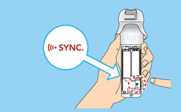
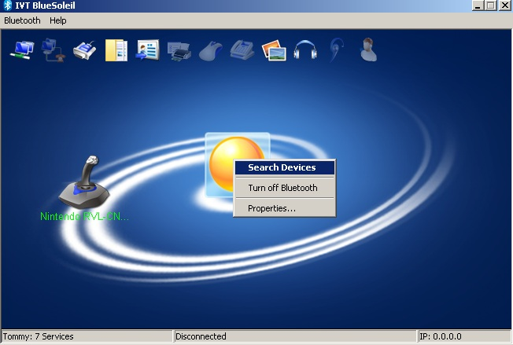
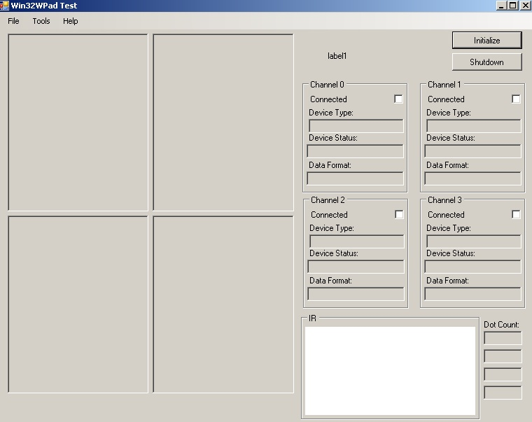

Wii Remote on PC
What will you need ?
- bluetooth adapter (if your PC doesn't have one)
- software for connecting bluetooth to PC:
- Bluesoleil (http://www.bluesoleil.com/), the latest version costs money, but I think earlier versions are still free if you can find them on the internet
- plugin source (you can find the download link at the bottom of this page)
- WiiRemote
- Unity2011-03-14 build or later.
Supported controllers:
- WiiRemote
- Buttons
- IR
- Acceleration
- Nunchuk
- Buttons
- Stick
- ClassicController
- Buttons
- Sticks
- WiiBalanceBoard
- MotionPlus
- Raw data
- Nunchuk (Not supported)
- ClassicController (Not supported)
Usage:
Connecting WiiRemote to PC (presuming that you've installed Bluesoleil software)
- Press Sync button on the WiiRemote, the leds should begin to flash.
--> 
* Click 'Search Devices' in the BlueSoleil window
--> 
* A joystick shaped icon should appear named 'Nintendo RVL-CNT-01'
* Right-click on it and select 'Search Services' (if the leds on the WiiRemote stopped flashing, press Sync button again)
* After few seconds right-click on the icon again, a new menu item should appear - 'Connect Bluetooth Human Interface Device), click on it
* WiiRemote is now connected to PC and we can start using it
Compiling the plugin
- Before you can use the plugin in Unity, you must compile it, go to WiiPadEmu->PluginSource->WiiPadEmu, open Win32WPad.sln
- There are four configurations:
- DebugWinForms, ReleaseWinforms - can be used for plugin testing without launching the Unity.
- DebugUnity, ReleaseUnity - compiles the plugin and copies necessary files to WiiPadEmu\Assets\Plugins directory.
- Just the suitable one and compile it
Testing the plugin without Unity
- If you've chosen DebugWinForms or ReleaseWinForms and were succesful in compiling the project, you should be able to launch application Win32WPadTest
-->
Download Links:
http://files.unity3d.com/tomas/WiiPadEmu2011-07-28_12-30.zip
That's it for basic usage !